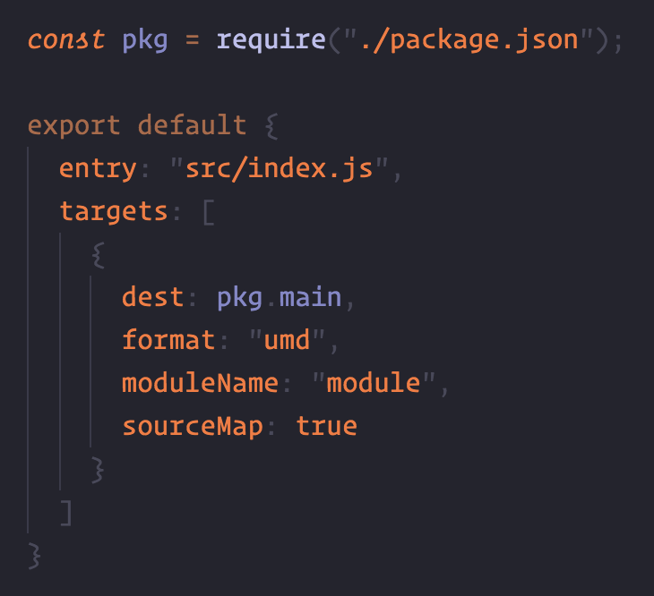
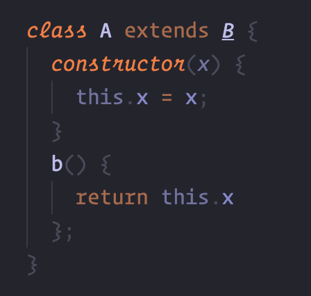
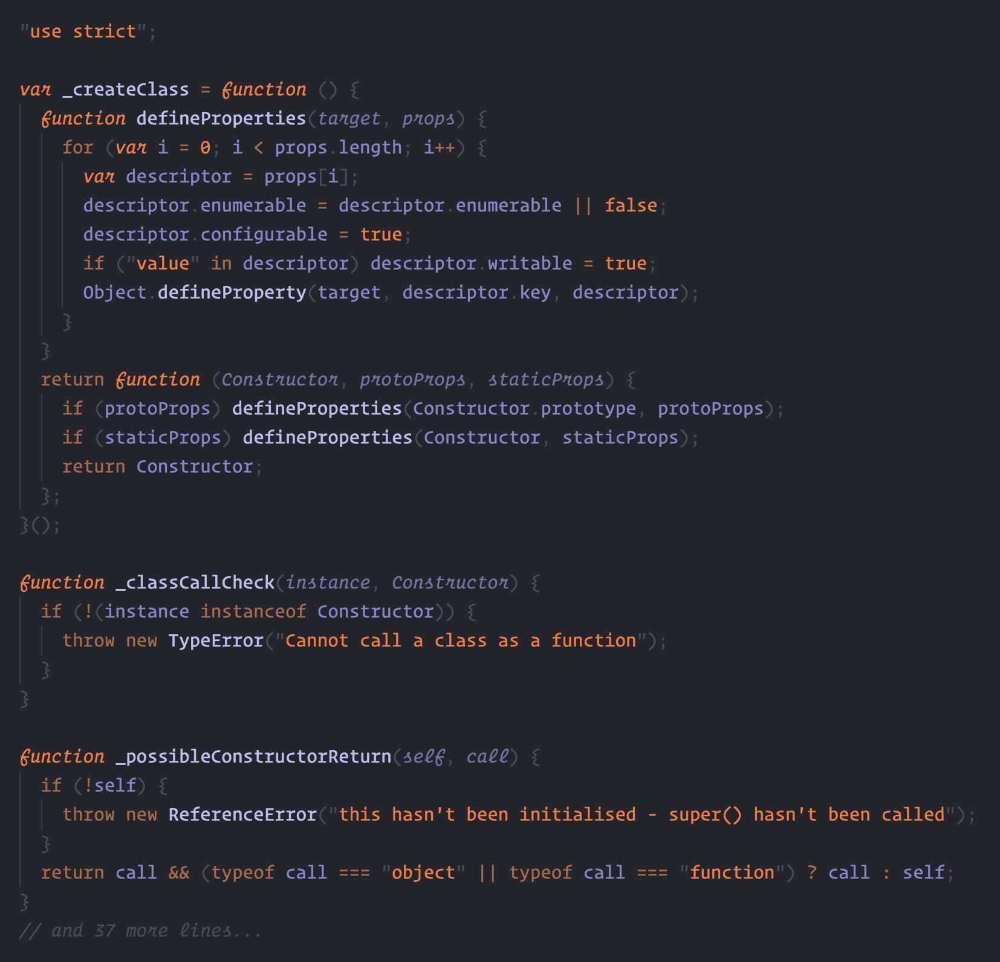
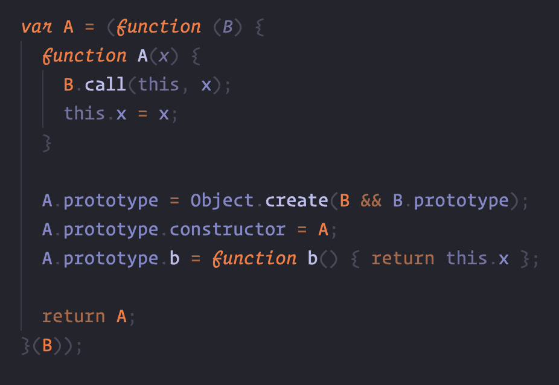
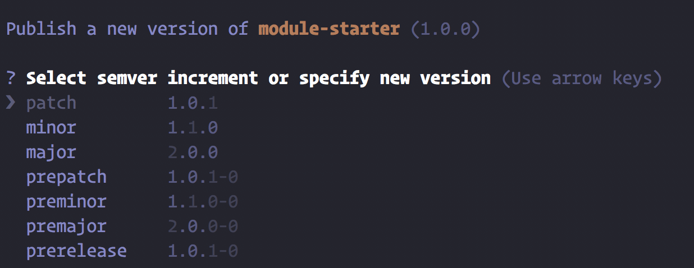
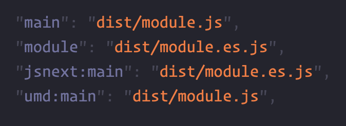

Use modern JavaScript to write a consumable library
What we'll cover
-
Bundling
Write your code in separate files for organization, then bundle it down to one file -
Transpilation
Allow anyone in your target audience to use your code -
Minification
Shrink your code down so it travels easier -
Releasing
Automatically version and check your code when you release
Generate a project
Run yarn init in an empty directory.
Feel free to use npm if you wish :)
Fast-forward to having code to bundle, preferably in src/
Bundling...
Add rollup
yarn add --dev rollup rimraf mkdirp
Support for new ES imports/exports. Different from webpack by relying solely on new import standard.
https://rollupjs.org/List of plugins
Webpack and Rollup (the same but different)

Transpiling...
Add bublé
yarn add --dev buble rollup-plugin-buble
Bublé is an ES2015+ compiler with zero configuration. It tends to transpile to ES5 that you or I would write.
https://buble.surge.shCode example
After Babel
After Bublé

Minifying...
Add uglify-js
yarn add --dev uglify-js gzip-size-cli strip-json-comments-cli
Uglify compresses your code so you can ship less.
http://lisperator.net/uglifyjs/Publishing...
Add np
yarn add --dev np
Steps you through the publish process and versions your code
https://github.com/sindresorhus/np
One more thing...
Multiple exports
Just add some extra properties in your package.json file and a few lines in your build file. Now, anyone can consume your library.
Now, you have
-
Bundling with rollup
-
Transpilation with buble
-
Minification and gzip size information
-
Support for bundlers that support modern modules